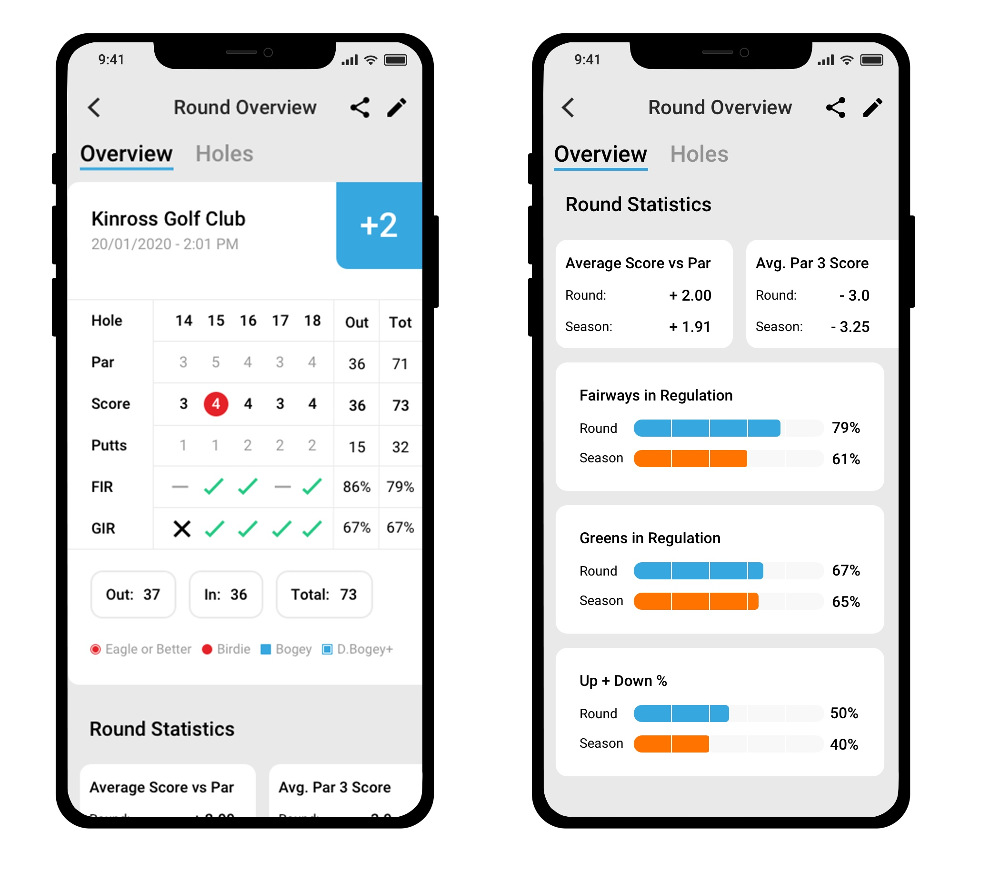
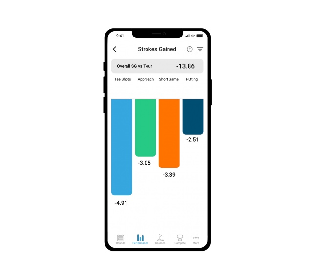

This is the most recent release we have done under ShotScope and was a small update to some of our core features that had a lot of complication behind it. With the Round Overview page it was very much out of date and with changing the app development stack it made sense to enhance this page of some existing feedback we already had.
Strokes gained whilst being only one statistic (at the moment) is very vital for a golfer to get direct feedback on exactly what loses them shots in their particular game. This is just the start for ShotScope strokes gained and the platform will be greatly enhanced in some upcoming releases.
For this project the process generally followed the guide I explained in the ShotScope case study HERE for round overview but we had a few extra steps when it came to strokes gained.
This project as already mentioned is a very much stripped down version of strokes gained in what we will be achieved when we release the next phases of the product. This made a lot of the conversations with focus groups and prototypes which had been focussed around a more complete product, be analysed to ensure we add value even with a basic model that could be released in the given timeframe.
The way we did this was by ensuring we split up features in order of technical implication referenced to the number of users who have requested a given feature.
On the Round overview, we managed to achieve a more insightful scorecard, which could give direct feedback to the user on which hole they missed GIR and FIR with the number of putts so they can see what most impacts their score.
We also included some overview statistics that we found through testing that could be valuable to the end-user and how that compares to their average to the season.
For strokes gained we landed a simplified overview into the strokes gained analytics. This takes a particular shot e.g tee shot's and compares how many shots you are likely to lose per hole compared to a pro.
This emphasises to all handicap ranges directly the main problem with their game and has been very well received with our users. The next implementations will further build on these and break the stats down further for each facet of their game.
